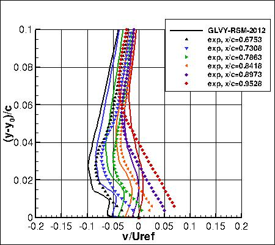
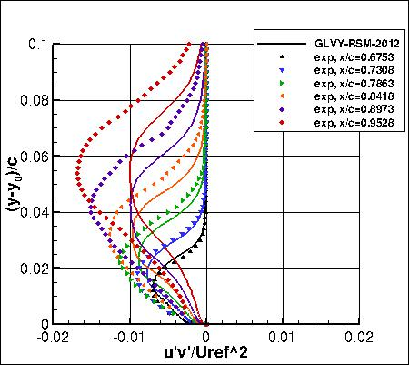
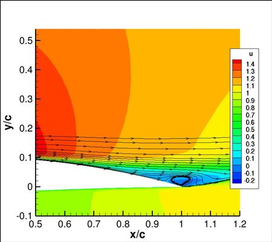
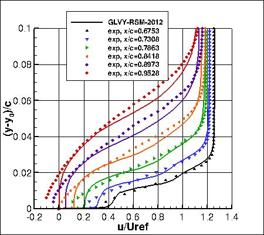
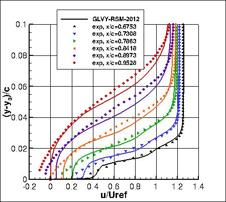

Public Access (formerly Langley Research Center)Turbulence Modeling Resource |
Return to: 2D NACA 4412 Airfoil Trailing Edge Separation Case GLVY-RSM-2012 Page
Return to: 2D NACA 4412 Airfoil Trailing Edge Separation Case Intro Page
Return to: Turbulence Modeling Resource Home Page
2D NACA 4412 Airfoil Trailing Edge Separation Validation Case
GLVY-RSM-2012 Model Results on Auxiliary O-grid
Link to GLVY-RSM-2012 equations



Note that thorough
grid studies were not performed for validation cases such as this one.
Some effort was made to ensure reasonable grid resolutions, but there may still be
small noticeable discretization errors. Therefore, these validation results shown should be considered
representative, but not "truth."
The plots compare the GLVY-RSM-2012 results from the code
aerodynamics.1.0.3
on the
auxiliary 481x253 O-grid (with finite thickness trailing edge).
Uref in the plots has been scaled as described on the
2D NACA 4412 Airfoil Trailing Edge Separation Case Intro Page.
Freestream turbulence intensity = 0.5% and freestream turbulent lengthscale = 0.1 m (see Note 4 on
GLVY model description page), resulting in a turbulence intensity = 0.056%
at 1 chord upstream of the leading edge. As in the measurements (Coles, D. and Wadcock, A. J., AIAA Journal, Vol. 17, No. 4, April 1979, pp. 321-329),
tripping was applied at 2.5% chord on the upper-side, and at 10.3% chord on the lower side (in both cases on a length of +-5mm and a height of 1mm,
with tripping intensity of 30%).
Standard lift and drag coefficients based on the freestream conditions listed on the Intro Page were: CL= 1.621 and CD=0.0312.
Furthermore, CFD surface pressure coefficients shown in the plot above were based on the freestream conditions.
The computations converged reasonably well to a steady state (residual CD fluctuation of +-0.5 counts). Note that these are compressible
code results at "essentially incompressible" conditions of M=0.09.
There may be a very small influence of compressibility.
It is important to note that the experimental u, v, and u'v' data were nondimensionalized with respect to
a non-traditional velocity at a location only about 1 chord below and behind the airfoil. This is different from a
traditional "freestream" value. As a result, u/Uinf and v/Uinf values from CFD
need to be divided by roughly 0.93 in order to be
comparable to the experimental normalization u/Uref (where Uinf is the usual farfield freestream value
and Uref is the experimental reference location). Similarly, u'v'/(Uinf2) turbulence values from CFD need to be
divided by approximately 0.932. However, the surface pressure coefficients from CFD agree better with
the experiment on the airfoil lower surface when no such correction is made (the matching of the lower surface
Cp is often used as a way to determine whether or not the flow conditions are consistent). The reason for
this inconsistency is not known. Therefore, all comparisons for this case should only be viewed in a
qualitative sense. Neither the surface pressure coefficients nor the surface skin friction coefficients
from the CFD have been adjusted.
Note that this model is currently assigned
MRR Level 1 for the purposes of this website.
This is because at this time the TMBWG has results for this model
from only one code. The results on this page are therefore not necessarily
reliable until additional independent code(s) can be used to verify the model implementation.
Return to: 2D NACA 4412 Airfoil Trailing Edge Separation Case GLVY-RSM-2012 Page Return to: 2D NACA 4412 Airfoil Trailing Edge Separation Case Intro Page Return to: Turbulence Modeling Resource Home Page
Recent significant updates:
 

03/27/2015 - updated plots to reflect proper y-offest in exp data
Page Curators: Christopher Rumsey,
Ethan Vogel,
Clark Pederson
Last Updated: 02/21/2018